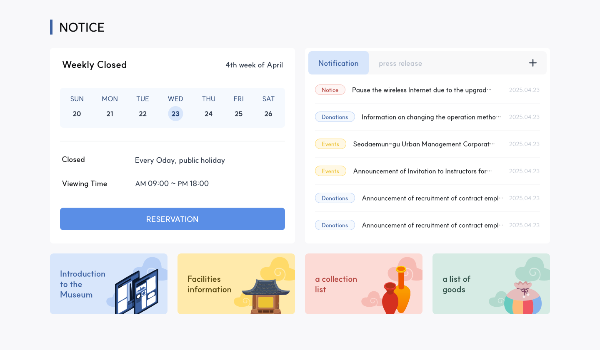
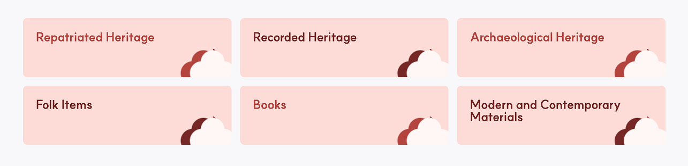
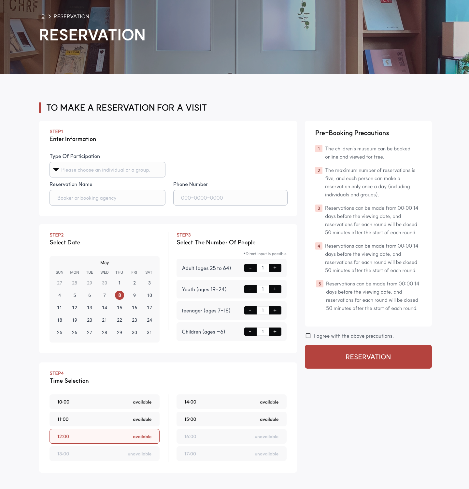
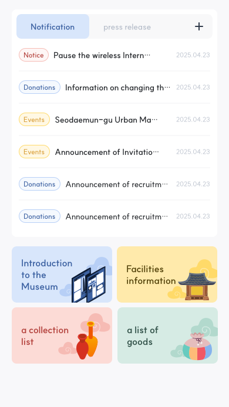
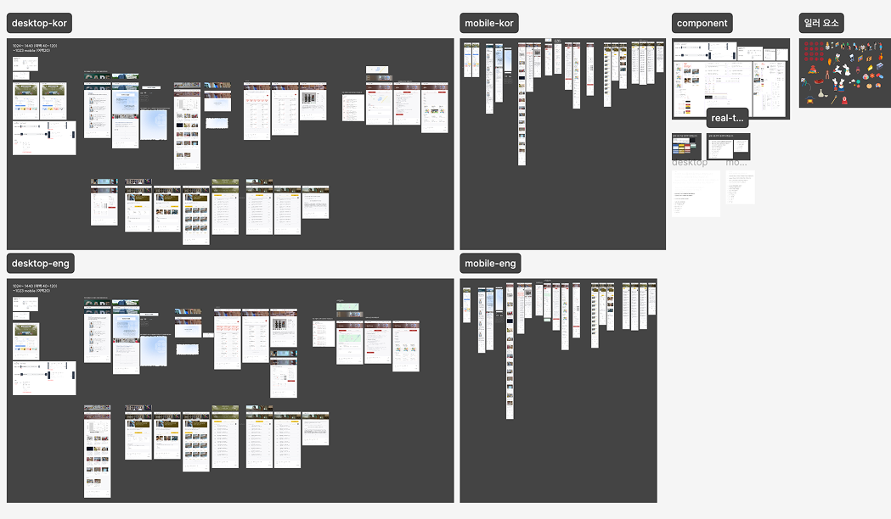

Museum of CARE
Platform
Website (Desktop & Mobile)
Role
UX/UI Design Intern
Team
3-person cross-functional team
Timeline
Mar 2025 – May 2025 (3 months)
Tools
Figma, Monday.com, Adobe Illustrator
Language
KOR/ENG

A digital museum platform that connects repatriated cultural heritage with exhibitions, educational experiences, and visitor reservations.
Visit Website
Problem
The CARE Museum, Korea's first museum dedicated to repatriated cultural heritage, features diverse exhibition halls, youth experience zones, special and curated exhibitions, and a complex collection of artifacts. However, the original website lacked a clear and intuitive structure for visitors to quickly find information, make reservations, or understand the breadth of offerings.
- Ticketing and reservation details were scattered
- Exhibition categories were not clearly structured
- The user experience lacked consistency across desktop and mobile
- Descriptions of artifacts and exhibits were hard to navigate
This made it difficult for general visitors, especially non-experts and young users, to find the information they needed.
Solution
We completely reorganized the site's information architecture so visitors can smoothly access exhibition details, reservations, artifact stories, and educational experiences in a logical and engaging sequence.
Key Design Directions
- Clear Information Architecture
Exhibition categories (e.g., Repatriated Heritage Halls, Youth Experience Zone, Special Exhibits) were organized in a hierarchical structure to support intuitive discovery.
- Reservation Flow & Visit Info Systemization
Reservation and visit details were positioned prominently, with date/time guidance and QR code ticketing flows clearly communicated to simplify planning. - Exhibit Content Enrichment
Artifact-specific pages were created that combine visuals with historical context and meaningful explanation, making complex cultural content accessible to all visitors. - Responsive UX (Desktop & Mobile)
Information flow and interaction patterns were unified across devices, ensuring smooth navigation whether on desktop or mobile. - Reusable Component System
Standardized components for exhibit lists, category navigation, and featured modules were built to ensure scalability and maintainability.




Impact
- Visitors can now compare and understand exhibition spaces more easily
- The reservation and visit planning process is simplified
- Consistent UX across devices improves accessibility and engagement
- Artifact content is presented in a visitor-friendly storytelling format
